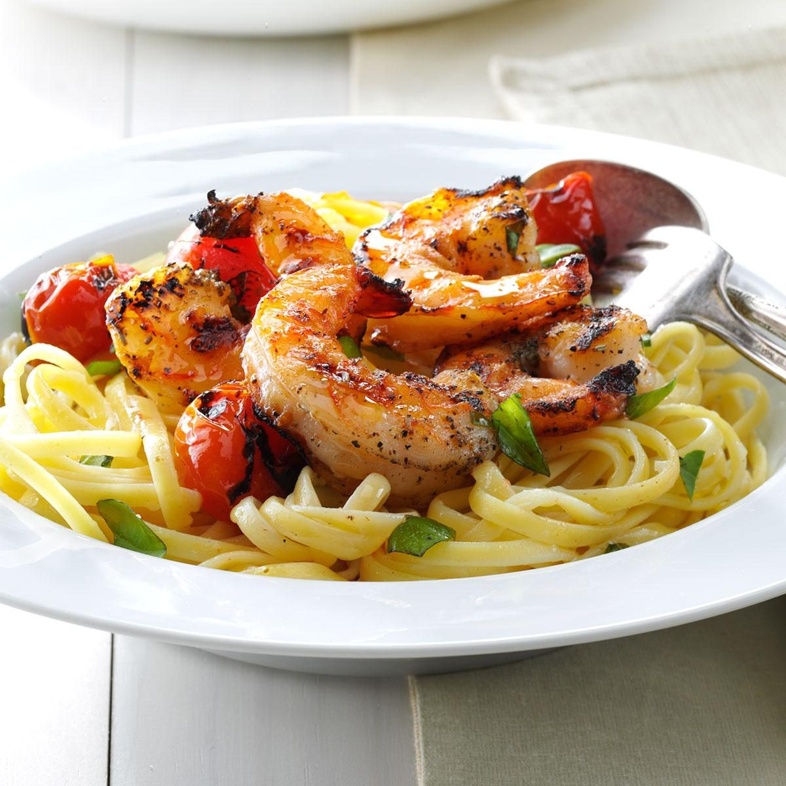

Cheesy Shrimp and Tomato Pasta
This recipe is great for a dinner you want to try to impress someone with, especially if you're a newbie at cooking. It has a lot of different elements and you will learn about proper cheese consistency when it comes to pasta sauce. With roasted tomatoes and a paramesan cheese base, you'll love this just as much as anyone you serve it to
For this recipe you'll need a baking sheet pan, a large pot for pasta, and a smaller pan for the shrimp
As for the ingredients, you'll need:
- 1/2 pound of shrimp, deveined and tails off
- 2 cloves garlic
- some butter
- 1 cup parmesan
- 1 package philidelphia cream cheese
- 1/2 pound of cherry OR roma tomatoes, washed, sliced lengthwise
- 1 package of thin spaghetti
- italian seasoning (or a blend of paprika, onion powder, garlic powder, oregano, salt and pepper)
- Olive oil
To start off, preheat the oven to 370 and fill your large pot halfway with water, then bring to a boil on the stove
-
for 4 servings, put half the container of pasta into the boiling water, and boil, stirring occasionally for 10-12 minutes, or until al dente
- while the pasta is boiling, coat a baking pan in olive oil and put the tomatoes on the pan and coat with italian seasoning
- once the oven is preheated, put the tomatoes in to roast, for approximately 15 minutes
- With the pasta boiling and the tomatoes roasting, coat your shrimp in the italian seasoning and the small pan to medium-high heat and add a drizzle of olive oil
- once the oil is hot, add the shrimp and cook for 6 minutes, flipping halfway through
- after the shrimp are cooked, take out and set aside
- Once the pasta has finished boiling, drain the pasta BUT SAVE SOME PASTA WATER (save ~2 cups worth)
- In the pot used to boil the pasta, turn the stovetop to medium heat and add butter, minced garlic and italian seasoning
- Cook for ~30 seconds or until fragrant, then add parmesan, a cup of the cream cheese and a small amount of the pasta water, stirring them into the pot.
- If the sauce is too thick, feel free to add more pasta water. Once the sauce is complete, turn off the heat and add the drained pasta to the cheese sauce, and mix thouroughly
- Once the tomatoes have finished roasting, take them out of the oven
- To plate, take a scoop of pasta and set it on the plate, add shrimp and tomatoes on top, and serve.
And you're finished! feel free to top with more parmesan or red pepper flakes. Serves ~4-5
